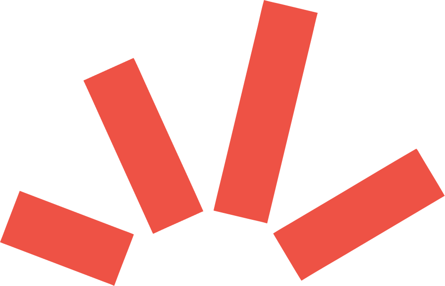
Voorbeelden
Het systeem in actie: posters, thumbnails, quote-cards en slides. Groen op Paper, een gecondenseerde kop die een vraag stelt, één merkkleur als accent, een echt portret en een licht geroteerd ornament. Redactionele collage, geen gladde SaaS.
Hieronder eerst de échte campagne-uitingen uit de huisstijl; daarna merk-getrouwe recreaties die je zelf kunt namaken met het OSGC-font en de huisstijl-kleuren.
Echte toepassingen uit de huisstijl
Posters, audio-thumbnails en Instagram-reels uit de Figma-huisstijl.
Beeldrechten bij UvNL en haar partners · alleen ter referentie getoond, niet in de download-kit.
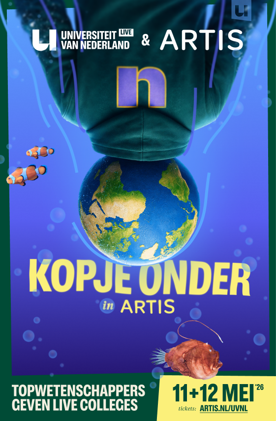
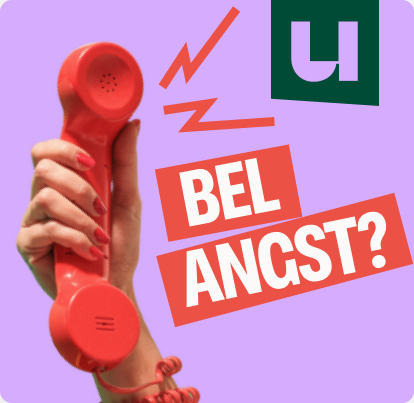
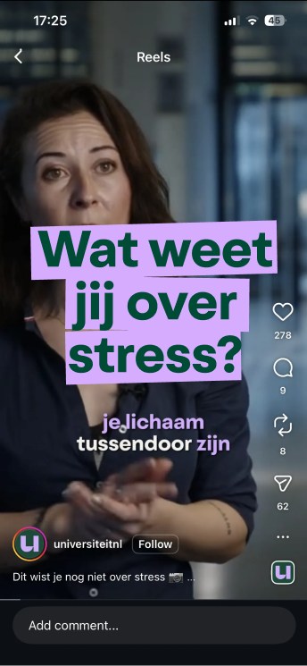
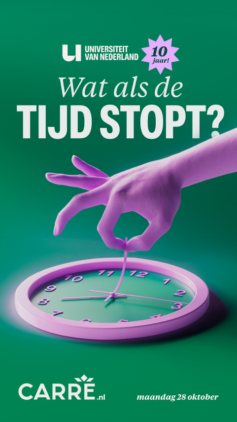
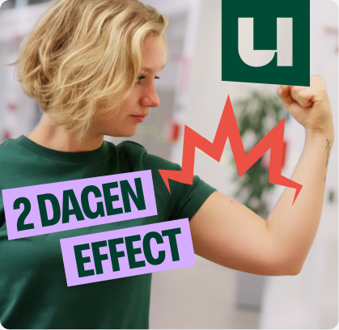
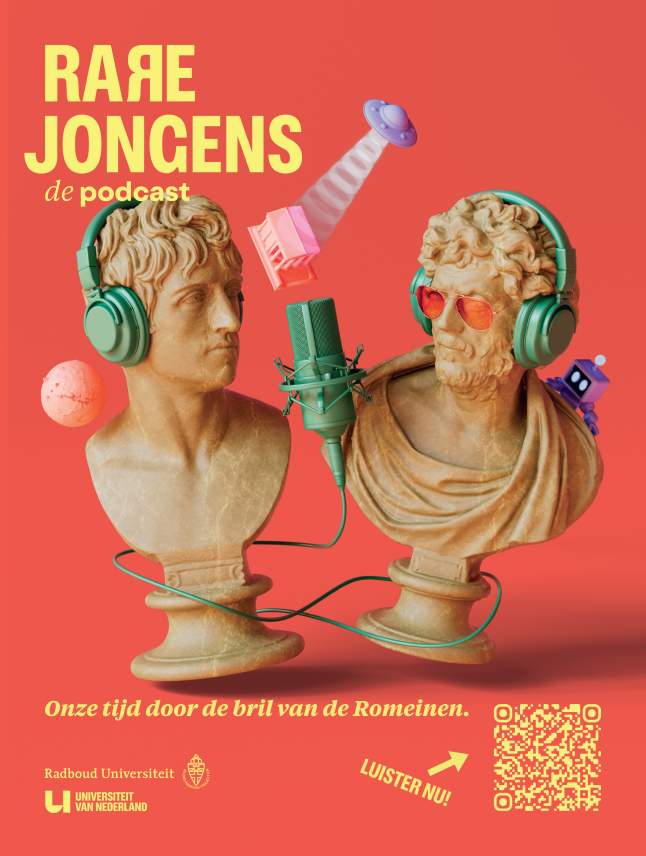
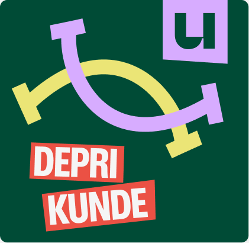
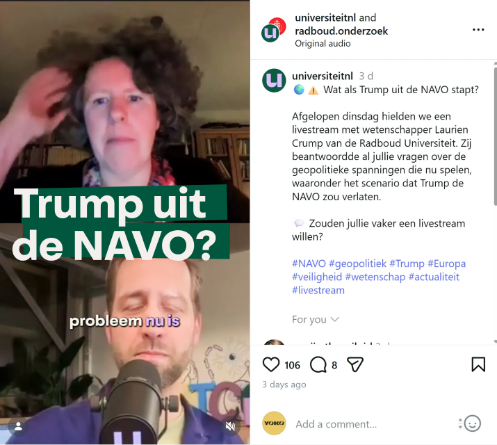
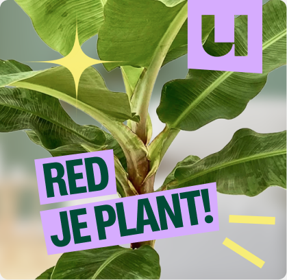
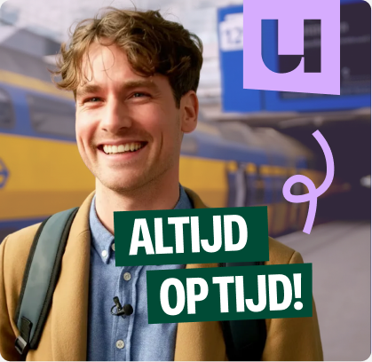
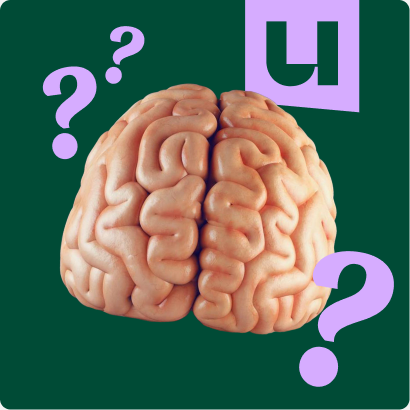
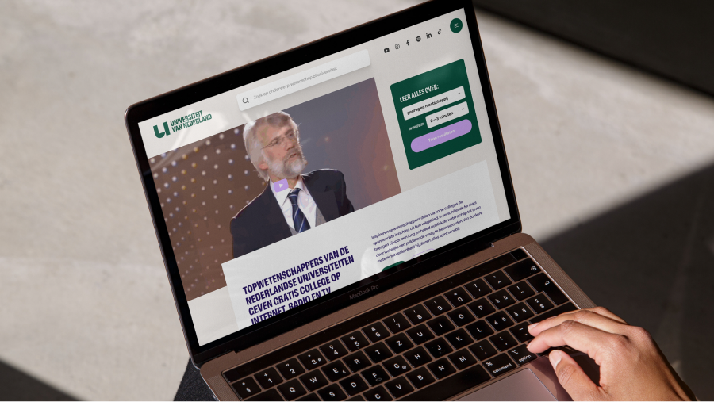
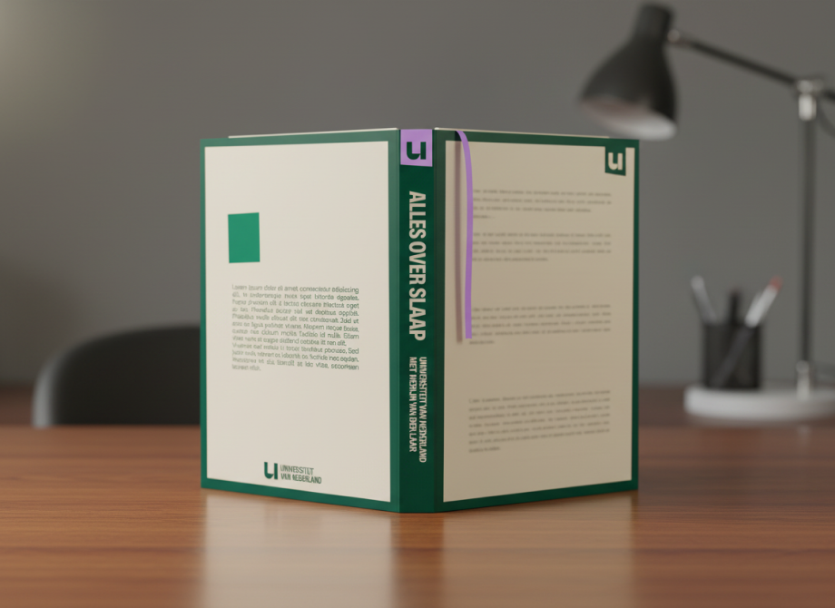
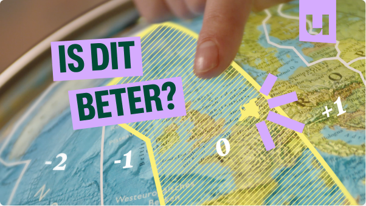
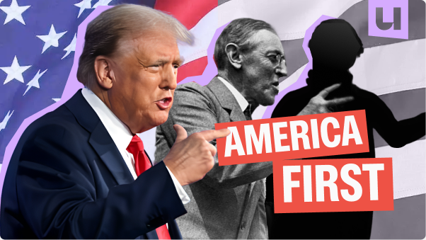
Merk-getrouwe recreaties
jij over
stress?
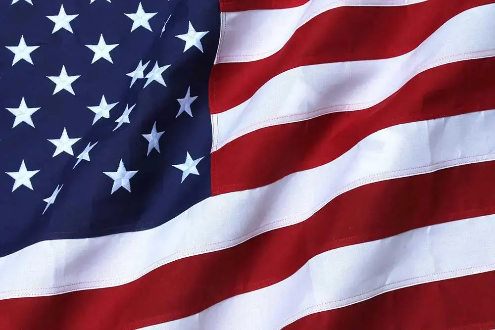
de NAVO?
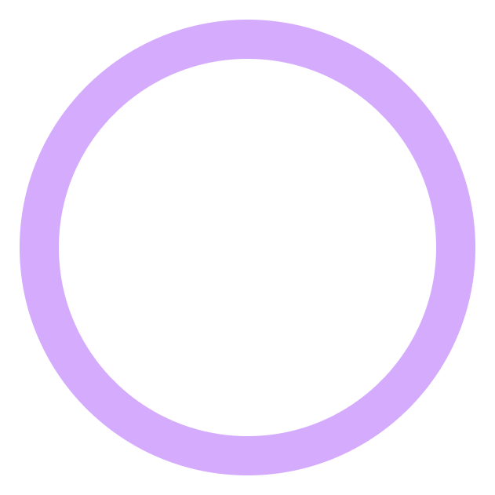
einde van
Europa?
de wetenschap
regent het?
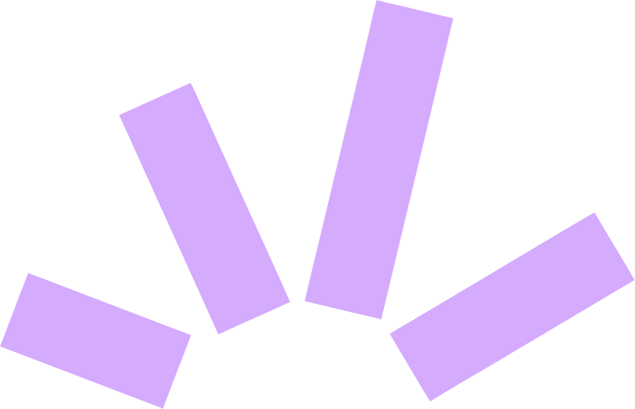
3D-elementen per vakgebied
Naast de platte iconen heeft UvNL een set 3D-objecten — één per onderzoeksgebied — als sfeermaker in thumbnails, posters en slides.
Beeld © UvNL · alleen ter referentie getoond, niet opgenomen in de download-kit.
 Informatie
Informatie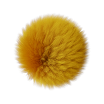
Aarde & milieu Gedrag & maatschappij
Gedrag & maatschappij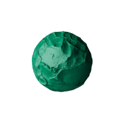
Kunst & cultuur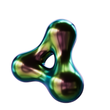
Taal & communicatie Economie & bedrijf
Economie & bedrijf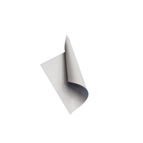
Recht & bestuur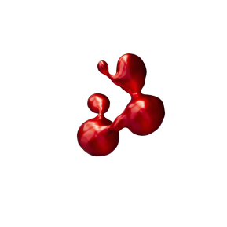
Gezondheid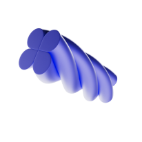
Techniek Onderwijs
Onderwijs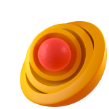
ZonDe ingrediënten
- Kop als vraag in OSG Condensed, hoofdletters, links uitgelijnd.
- Groen op Paper als basis; per stuk één verzadigde accentkleur.
- Echte foto, tight gecropt, eventueel met een merkkleur-wash (multiply).
- Eén ornament (bliksem / pijl / spark / circle), 8–20° gedraaid.
- Serif-italic voor de ondertitel of het citaat — nooit hele alinea's.
- U-mark als afzender, klein in een hoek of op de end-card.